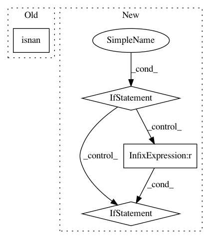

08be819a5fd8edd74a59dcc363c9e7694ca009d2,neurodsp/utils/outliers.py,,remove_nans,#,8
Before Change
sig_nans = np.isnan(sig)
sig_removed = sig[np.where(~np.isnan(sig))]
return sig_removed, sig_nans
After Change
sig_nans = np.isnan(sig)
if sig.ndim == 1:
sig_removed = sig[np.where(~sig_nans)]
elif sig.ndim == 2:
sig_removed = sig[~sig_nans].reshape(sig_nans.shape[0], sum(~sig_nans[0, :]))
sig_nans = sig_nans[0, :]
else:
raise ValueError("Only 1d or 2d arrays supported.")
return sig_removed, sig_nans
def restore_nans(sig, sig_nans, dtype=float):
In pattern: SUPERPATTERN
Frequency: 3
Non-data size: 4
Instances
Project Name: neurodsp-tools/neurodsp
Commit Name: 08be819a5fd8edd74a59dcc363c9e7694ca009d2
Time: 2019-09-01
Author: tdonoghue@ucsd.edu
File Name: neurodsp/utils/outliers.py
Class Name:
Method Name: remove_nans
Project Name: ContextLab/hypertools
Commit Name: 1cfe4b2736a91865a44d73ff179a52144af8a6ce
Time: 2018-01-22
Author: andrew.heusser@gmail.com
File Name: hypertools/tools/format_data.py
Class Name:
Method Name: format_data
Project Name: scikit-learn/scikit-learn
Commit Name: c50597926f69286fce5c416d23271a302b2da962
Time: 2020-08-31
Author: devilincarcerated020@yahoo.com
File Name: sklearn/utils/_mask.py
Class Name:
Method Name: _get_mask